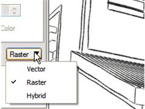

Use Vector for Clean Lines |
|
Use the Vector setting in the Rendering Mode drop-down list (Window > SketchUp Model) for clear, scalable, line work. This mode is particularly useful when printing line-intensive models on large paper sizes.
Note that vector mode is not suited for some of SketchUp's raster rendering features such as fog, shadows, and some complex styles. |
 |